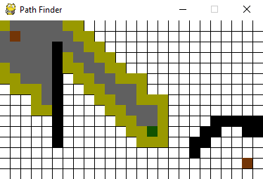
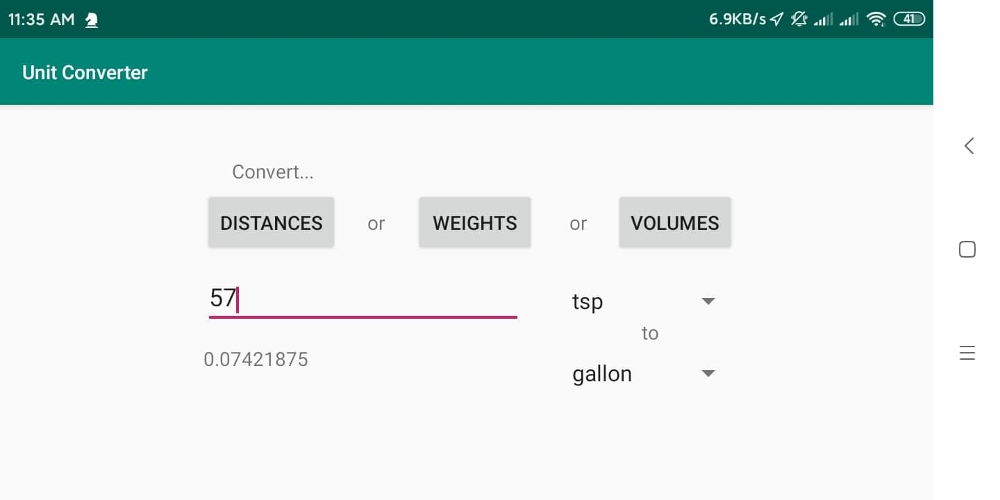
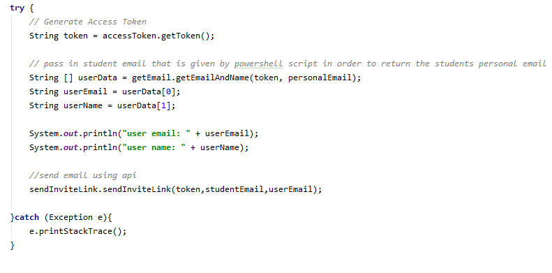

Hi, my name is Zachary Beall and I am a senior at Dallas Baptist University.
I am currently working with KATZ radio to find sponsors who would like to run ads on our program (Click here to listen).
If you would like to run an add on KATZ radio at an affordable price, do not hesitate to reach out!
Email: katz@zacharybeall.com
Phone: 817-600-7245
Although I am working with KATZ radio my expertise is in IT and Software Development. When I graduate, I plan to get work as a programmer to develop various apps and/or websites. If you have any needs in this area do not hesitate to reach out!

Uses the A* search algorithm to find the shortest path between two points.
click to view code

A unit converter that utilizes mathmatical programing in order to convert between 26 different unit types.
click to view in play store
click to view code
Uses the bactracking algorithm to solve and provides a gui to play the game of sudoku.
click to view code

A java program that utilizes the Onelogin API to generate a link for new users to create thier passwords
click to view code